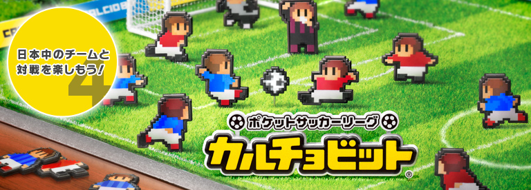
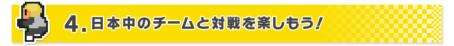
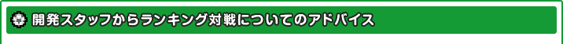
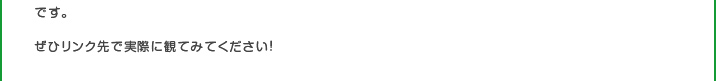
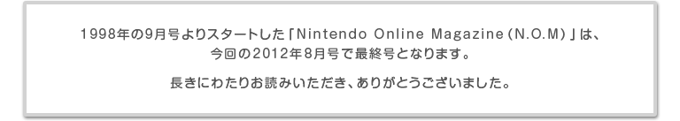

『ポケットサッカーリーグ カルチョビット』は、ニンテンドー3DSの通信機能に対応し、ホームタウンの「空港」から、さまざまな通信対戦を楽しむことができるようになっています。すれちがい通信やいつの間に通信の遊びもありますが、特にオススメなのがインターネットを利用した「ランキング対戦」と、そのランキング対戦と連動するサイト「日刊カルチョビットweb」です。
「ランキング対戦」では、自分が育てたチームを登録して日本全国のチームと試合をすることができ、勝敗によって得られるレーティングポイントで「全国」と「地域別」のランキングを競います。また、ニンテンドー3DS本体にフレンド登録している友達のチームとの対戦も可能です。
ただし、「ランキング対戦」の「全国」と「地域別」のランキングにいるチームと対戦するには、「ダービーマッチ」で同じホームタウンのチームに勝って、「ホームタウンの権利」を獲得する必要があります。「ダービーマッチ」は1日に1試合しか挑めないので、できるだけしっかり育成してから挑んでみましょう。

権利を持っているチームが複数いる場合は、どのチームに挑戦するかも重要です。そんなときに役立つのが「日刊カルチョビットweb」です。そのチームのランキング順位はもちろん、フォーメーションや選手の能力が確認できますので、その情報を見て、勝てそうかどうかを判断するのも良いかもしれません。
頑張ったけれど自分のホームタウンが激戦区で、なかなか「ダービーマッチ」に勝てない…というときには、権利枠が空いている地域や、権利が取得できそうな地域にホームタウンを移転するのもひとつの手です。もちろん、愛着のあるホームタウンを変更するのは忍びないものですが……。
なお、「ランキング対戦」では、通常の一人プレイのときの試合のように、自分で「チーム戦術」を変更したり、選手交代をすることはできません。あらかじめ「スタメン」と「采配オプション」を設定しておき、あとはフルオートでの対戦になります。
この「ランキング対戦」に参加すれば、ホームタウンの権利を取れていなくてもチーム情報が「日刊カルチョビットweb」に掲載されます。すべてのチームには個別の「クラブID」が割り振られていますので、これをゲーム内の「クラブID対戦」で入力すれば、気になるチームと試合をすることも可能です。
「ホームタウンの権利」を持っているチームは、1日に1度選定されます。その結果、ゲームからアクセスしたときに「ホームタウンの権利が奪われました」と言われることがあります。ちょっとガッカリしますが、またダービーマッチに挑み勝利することで、再獲得ができますので、チャレンジをしてもらいたいところです。
自分のチームの「ランキング対戦」での試合は、「最近の試合結果」から再度観戦することができます。また、劇的なゴールシーンは試合後に保存しておき、「クラブハウス」内の「ビデオライブラリー」から「日刊カルチョビットweb」に投稿することも可能です。投稿されたゴールシーンは、このサイト上で観ることができ、例えば個人のブログなどに貼ることもできます。
さらに「日刊カルチョビットweb」に掲載されている自分以外のチームの「試合ID」を「ビデオライブラリー」の「試合ID検索」に入力すると、その試合を観戦することがもできます。ランキング上位チームがどのくらい強いのか、またどんな戦術を採っているのかをのぞいてみるのも楽しいでしょう。それは同時に、自分のチームに何が足りないのか？ ということの参考にもなるかもしれません。
ちなみに、「ランキング対戦」で試合をすると、対戦相手のホームタウンにゆかりのあるお土産をもらえます。このお土産は「スタジアムグルメ」で確認することができます。本当にクラブチームの遠征に行ったような気分になれるかもしれません。





『ポケットサッカーリーグ カルチョビット』は、「ランキング対戦」以外にも、さまざまな方法で、日本中のチームと試合をすることができます。
まず、ニンテンドー3DSと『ポケットサッカーリーグ カルチョビット』のゲームカードを持っている友達がいれば、「ローカル通信対戦」で一緒に通信対戦を楽しむことができます。「ローカル通信対戦」は、試合中に随時戦術変更や交代の指示ができますので、インターネット経由の「ランキング対戦」とはまた違った対人戦を楽しむことができるはずです。
もちろん、ニンテンドー3DSの「すれちがい通信」や「いつの間に通信」にも対応しています。「通信メニュー」で機能をオンにしておけば、ほかのユーザーとすれちがったときに相手のチームデータを受信して練習試合や親善試合ができたり、不定期で「スペシャルチーム」が配信され、専用の特別スタジアムで親善試合を行えます。
思いがけない場所で、思いがけないときに、いろんなチームと出会えるのが「すれちがい通信」や「いつの間に通信」の醍醐味です。たとえ自分のチームが育成途中でも、機能はオンにしておくのがオススメです。
ちなみに「すれちがい通信」をオンにすると、「クラブハウス」に「チームの犬」が出現します。この犬にタッチすると、プレイヤーが設定した目的地に向かって散歩を始めます。そのうちに犬は何かを見つけて、「クラブハウス」にまた帰ってくることがあるそうですが、いったい何を見つけてくるのか……？ それはご自身の目で確かめてみてください。
ニンテンドー3DSソフト『ポケットサッカーリーグ カルチョビット』は、サッカーの戦術を考えるのが大好きという方はもちろん、サッカーをあまり見たことがないという方にもオススメできるソフトです。
手塩にかけて育成した選手たちが活躍したり、自分が指示した戦術が大当たりしたり、負けてばかりだった相手に勝てたときの爽快感は、チームへの愛着もあって、もしかしたら実際のサッカー観戦以上のものがあるかもしれません。
本作は通信機能の充実もあって、やりこみ要素も前作よりアップしています。個性あふれるチーム同士の試合は、見ているだけで時間を忘れてハマってしまいます。チーム作りも、観戦スタイルも本当に自由なゲームです。ぜひプレイして、自分なりのサッカーの面白さを発見してください。
